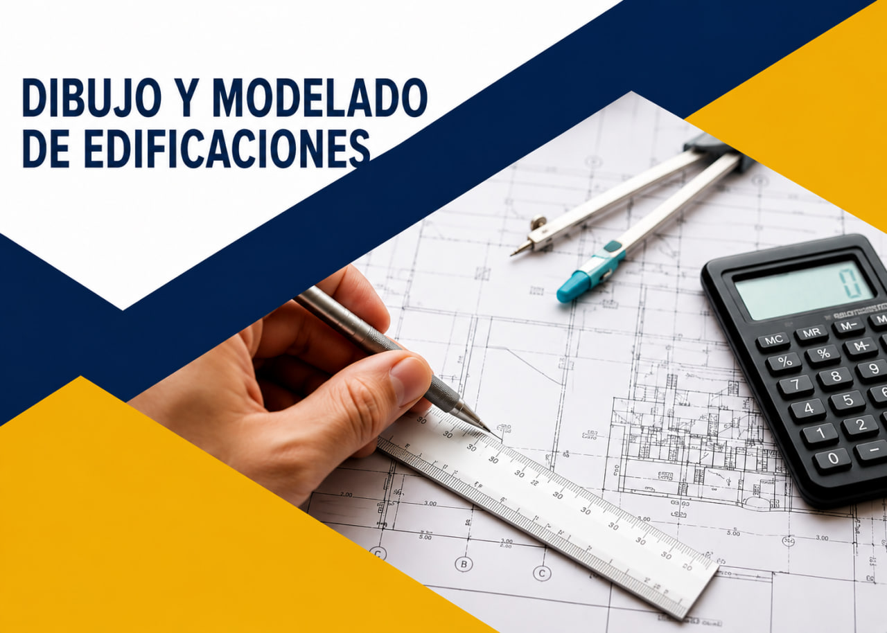

Formación orientada al soporte técnico, administración de redes, sistemas operativos y atención de infraestructura tecnológica.
Leer MásOferta Educativa
Formación orientada al soporte técnico, administración de redes, sistemas operativos y atención de infraestructura tecnológica.
Leer Más
Desarrollo de habilidades para interpretar, representar y modelar proyectos constructivos con herramientas técnicas y digitales.
Leer Más
Especialidad enfocada en comunicación visual, creatividad, diseño gráfico, producción de piezas publicitarias y propuestas de marca.
Leer MásPreparación en atención al cliente, comunicación comercial, gestión administrativa y procesos de servicio en organizaciones.
Leer Más
Formación técnica en sistemas eléctricos y mecánicos, mantenimiento, diagnóstico y procesos aplicados al sector industrial.
Leer Más
Aprendizaje de circuitos, control, automatización, medición y soporte de sistemas electrónicos presentes en entornos productivos.
Leer Más